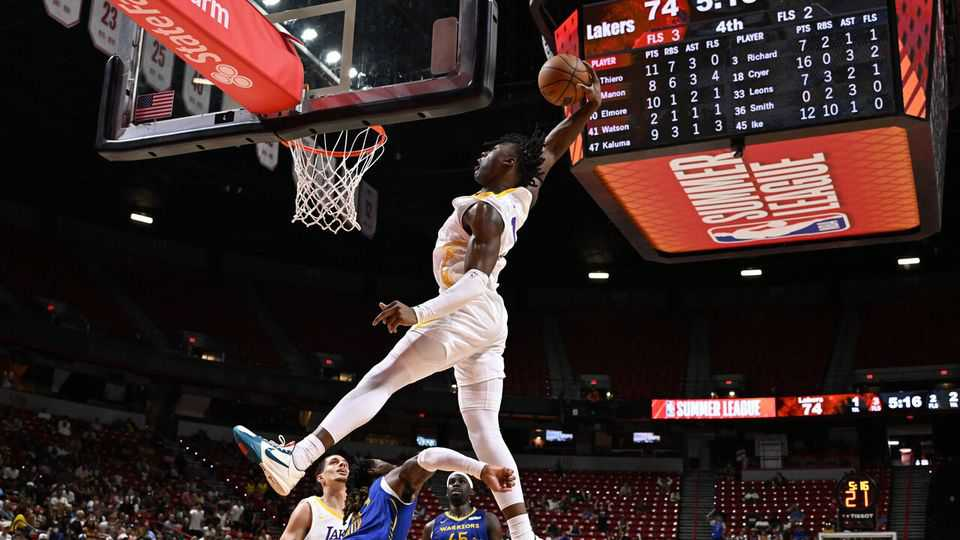

Is the LA Lakers’ sale a sign of sports investment gone mad?
$12.5bn price tag is highest ever for an American sports team

Aug 13th 2026
WHAT IS A worthy consolation prize for a billionaire investor whose attempt to buy a stake in fifa’s football World Cup recently blew up in his face? Answer: pivot sharply and snap up one of America’s most valuable basketball teams, the Los Angeles Lakers, instead.
In a $12.5bn deal announced on August 12th, Joshua Kushner, founder of Thrive Capital, an investment firm, will become the Lakers’ controlling shareholder, with Bob Iger, an ex-CEO of Walt Disney, as his wingman, insiders say. The price tag is the highest ever for an American sports team, reflecting institutional investors’ feverish appetite for sports franchises.
The sum is a whopping $2.5bn more than Mark Walter, the seller of the team, paid for the Lakers around a year ago, also a record amount at the time. A day earlier a unit of Apollo Global Management, another asset manager, said that it had put $2.6bn of debt and equity behind the owner of the New York Yankees, a baseball team. Does this mean that sports investment is overheating?
Messrs Kushner and Iger have compared buying the Lakers to getting hold of the Mona Lisa. The team is indeed one of a kind. No basketball team earns nearly as much from local broadcasting rights as the Lakers. Nor does any American sports team come close to matching its international name recognition and fanbase, according to Ampere Analysis, a media-research firm.
Basketball itself has unique attractions for investors. In 2024 the National Basketball Association (NBA) negotiated a nationwide $76bn, 11-year media-rights package with several broadcasters, including Disney’s ESPN and ABC networks (negotiated while Mr Iger was still boss), providing long-term certainty on future broadcasting revenues. The sport appeals to young fans, involves high-scoring games and has plenty of drama, such as this year’s victory by the New York Knicks in the NBA Championship. Its international appeal is also likely to continue to grow. Next year the NBA plans to launch a 16-team league in Europe.
But Mr Kushner is also on the rebound. His attempt to lead a $4.2bn investment in the commercial arm of fifa, world football’s governing body, ended in fiasco after a global backlash over the possible sale of the World Cup. Days after the rebuff, he and Mr Iger switched from trying to set up a new basketball team in Las Vegas to buying the Lakers instead. Their investments will be backed by Thrive Eternal, a long-term investment vehicle focused on businesses that Mr Kushner’s firm thinks will withstand disruption by AI (Thrive is also a big investor in OpenAI, just in case).
The logic sounds rational. But even without a bidding war he is putting more than twice as much value on the Lakers as another group of investors paid last year for the Boston Celtics, one of America’s most valuable basketball teams. That sounds extravagant.
If the NBA approves the deal, Mr Walter will pocket a fortune. But it is not clear why he was in such a hurry to sell the Lakers. He will apparently retain a controlling stake in the Los Angeles Dodgers, a baseball team, as well as large investments in several other big sports teams. Bloomberg, a news agency, reported that his firm, TWG Global, is trying to raise cash amid scrutiny by federal investigators into loans it received that were put on the books of Mr Walter’s insurance companies. He is also said to be unwell. Perhaps he just saw the merits of a quick flip. ■